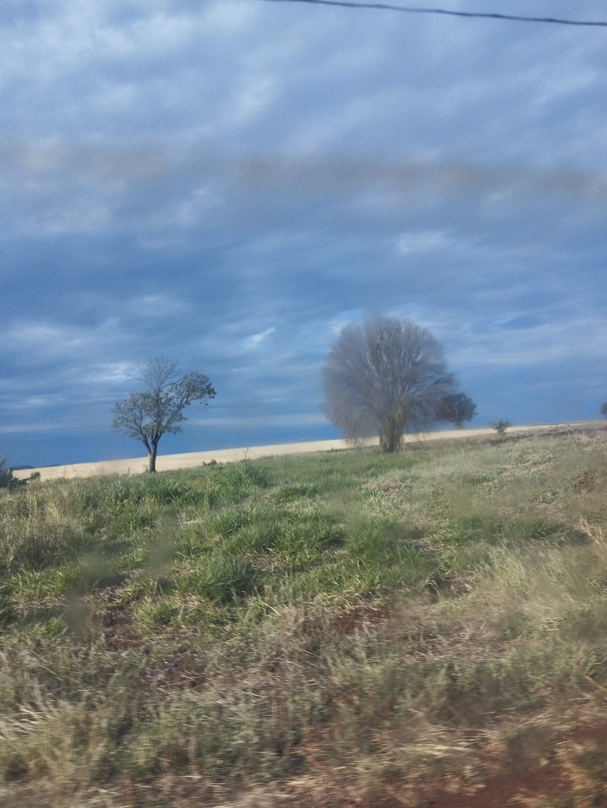
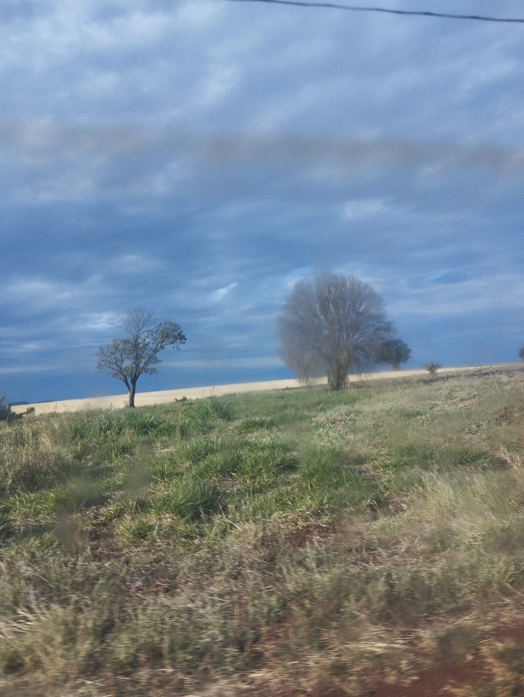

A Relação entre a cidade e o campo é fundamental para o bem-estar da sociedade, que só se mantém equilibrada e próspera quando ambos se desenvolvem de forma contínua. Campo e cidade se complementam mutuamente, fornecendo avanços em tecnologia, produção de alimentos e o incentivo a novas gerações de jovens comprometidos com o progresso social.
 
